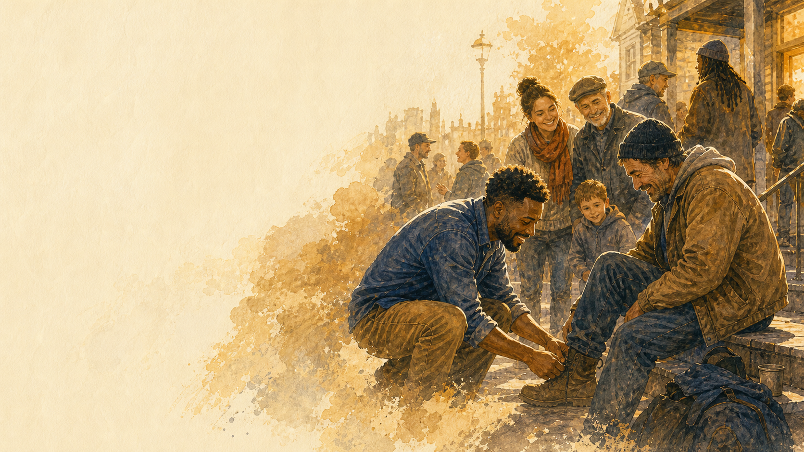

Let AI do the coordination. Let humans do the connecting.
Ask
Ask
Are you interested in this mission? In this topic? Do you want to be part of solving the problem? — If yes, the thousand questions take care of the rest.
An incredible truth
Science proves we’re hardwired for openhuman connection.
Longitudinal
Human connection is #1 predictor of a fulfilling life 85-year Harvard study
Public Health
Isolation equivalent to 15 cigarettes / day
Neuroscience
Generosity activates brain reward + oxytocin
Epidemiology
Strong social ties = +50% odds of survival
An incredible truth
The #1 predictor of a fulfilling life:
openly giving and receiving human connection.
Four independent fields converge on one truth.
Neuroscience
Reward + oxytocin
Public Health
Stronger social connection
Lower mortality risk
Epidemiology
+50% survival
Longitudinal
85 years
What are we wired for?
#1 predictor of a fulfilling life:Giving and receiving real connection.
Every community already has a hidden invitation graph.
Give n Receive turns that invisible social judgment into the next right invitation.
Right person. Right moment.
📱
Screen Isolation
Smartphones captured our attention. Social media promised connection but delivered loneliness.
🤖
AI Displacement
AI agents and robotics are displacing human labor, purpose, and identity.
🎭
Synthetic Social
Social media is becoming less real. AI-generated content is replacing authentic human expression.
THE VOID
The need for real human connection, community, and purpose is about to go parabolic
Appendix · How Culture Spreads
Culture is shown, not told.
You can't tell someone to be giving. You can't tell someone to open their heart. You demonstrate it — they feel it — they reciprocate it — they spread it. That's how culture moves through a room.
We
Demonstrate
Radical abundance.
Giving without scoring it
Generosity on every shot
Five-star welcome
Belonging from minute one
Super-positive vibe, every event
→
They
Feel It
Something is different here.
“I matter here.”
“I belong here.”
“These people are different.”
“Nobody made me feel small.”
“I want to come back.”
→
They
Reciprocate
The warmth comes back.
Round 4 looks nothing like round 1
They cheer the opponent's shot
They welcome the next newcomer
They make the joke that lands
They open their heart back
→
They
Spread It
Culture compounds.
They bring friends in
Their friends feel it too
Every new player gets the same treatment
The room teaches the next room
The flywheel turns on its own
What we're actually doing at every lower-level social
We're not just filling courts. We're training new players in NEPC's way of being — through demonstration. Every regular at NEPC was once a newcomer who FELT this and decided this is how they want to be. The phone call is the first demonstration. The event is the second. By the time they're a regular, they're the demonstration for the next person walking in.
Appendix · The HC Touchpoint Chain
NEPC runs on human connection.
Every interaction is a touchpoint. Strung together, the chain IS the product. Lose any one, the chain breaks.
Stage 1
The Phone Call
Not a text. Not an email. A voice.
“Hey, I'm calling about Friday — you'd love this group.”
5 minutes. The player feels seen.
Stage 2
The Invitation
Frictionless. Curated. Inside.
“You're in. Here's when. Here's who. Nice and easy.”
No calendar scan. No FOMO. Pure belonging.
Stage 3
Arrival
The front desk welcomes you by name.
“Hey Sarah! Back working on that backhand drop?”
Music dialed. Room feels alive the second you walk in.
Stage 4
On Court
Dave, Krista, Ryann — running it.
“Sarah, you're with Marcus this round — he's gonna love your reset game.”
Right partner. Right introduction. Right laugh.
Stage 5
Lower-Level Socials
Same chain. Higher volume.
“I came once. I'm a regular now. I bring my friends.”
New players feel like they've been here a year.
This is what it looks like when a pickleball club ACTUALLY runs on human connection
Picklr can't fake it — sterile is in their DNA. The local rec center can't sustain it — no system holds the chain together. NEPC is the rare club where every touchpoint in the chain is intentional — and Give n Receive is the operating system that scales it.
Appendix · The Fuel
The fuel of the business is human connection, human generosity, feeling good.
Humans are at their best when they don't take themselves too seriously — when they're giving, open, free, spontaneous. The same pattern keeps showing up.
Humans at their best
Not taking themselves too seriously.
Giving without scoring it
Open, not guarded
Spontaneous, not scripted
Free — from ego, from performance
Laughing easily
Generous with energy, attention, time
Pickleball at its best
The court is full of comedians.
Fun 3.0s playing down as a gift
Calling your own faults, even the close ones
Celebrating an opponent's nasty shot
Trash-talk that lands as love
Letting the partner take the next one
Trying the trick shot anyway
Community at its best
Strangers leave lighter than they came.
The new person feels welcomed without being talked at
People surprise each other with kindness
Status drops at the door
The bar becomes the place where the night extends
People exchange numbers without a plan
You feel better than when you walked in
Even the name is silly
Pickleball — the word itself disarms people. Nobody walks into a pickleball court guarded. The silliness is the door in. That's not a bug. That's the feature.
Appendix · The NEPC Operating Model
Airtight operations × free spontaneous joy.
Not plus. Multiplied. Either one at zero and the whole thing zeros out. NEPC is the rare club that does both.
Airtight Operations
The discipline most clubs skip.
Courts fill. Always. Sub-list works in seconds.
Group compositions Krista would have picked — even when she didn't.
Pro lessons + clinics scheduled, recurring, nothing falls through.
Lesson notes captured, tagged, searchable across pros.
Member journeys mapped. New-face flagged. Churn predicted.
Phone calls track. Outreach measured. Every “no” learned from.
Velocity dashboard. Experiments per week. One ticket queue.
×
Free Spontaneous Joy
The fuel most clubs forget.
Music dialed for the time of day, 24/7. Never silent.
Bar at the front desk. Beer + wine. The night extends.
Dave, Krista, Ryann on the court — setting the tone live.
Fun anchors (Sanjays) baked into lower-level socials.
Silly. Generous. Welcoming. People leave laughing.
The vibe IS what people pay for.
Picklr
Operations without joy. Clean, efficient, sterile. People play and leave.
The local rec center
Joy without operations. Vibe, no system. Doesn't scale. Doesn't compound.
NEPC
Both. Airtight ops × free spontaneous joy. The combo IS the moat. The combo IS Give n Receive.
Appendix · The NEPC Problem Map
Every NEPC problem is a Give n Receive problem.
We're not building a product TO a market. We're solving the actual problems of a real, profitable club — and discovering that those problems ARE the product.
The NEPC Problem
Give n Receive Solves It By…
High-quality experiences live in Krista's head. We know what good looks like — can't scale it.
Encoding Krista's judgment into a model that proposes group compositions every event. Every correction trains it.
Invitation-based events feel exclusive — but reach a small set. Players love them (no calendar to check, sense of belonging). We need MORE players in the ecosystem; events aren't on the public calendar.
Routing invitations to the right players at the right cadence. Same exclusive feel; bigger eligible pool. The product IS invitation-based matchmaking.
Pro followings are under-monetized. Every pro has students who'd take any private, Pro+3, or clinic with them. Scheduling falls through the cracks.
Pro Following Autopilot — matches each pro to their followers, recurring cadence locked in, last-minute slots filled in seconds. Nothing slips. $30–50K/yr/pro recovered.
Lessons + clinics never get referred. Players who LOVED a lesson with Caleb or a clinic with Dave would invite a friend — there's no mechanism.
Invitation-based matchmaking applied to the academy: "I just took an amazing clinic — want to come with me?" sent in one tap, routed to the right friend.
Subs & cancellations leave courts with 3 of 4. Manual scrambling every time. Headcount almost never divides cleanly by 4.
Knows who would jump for the open spot — right band, right style, free right now. First yes wins. Court fills in seconds.
Cross-silo isolation. The 4.0 women's group never meets the 4.0 men's group. Same club, parallel universes.
Bridges silos with curated cross-events — same band, different room. Detects who'd actually click and routes them in.
Beginner-to-member journey. New players walk in, fall off without making friends, never become members.
Routes their first three experiences for maximum belonging. Pairs with welcomers, places in the right social rooms, tracks the conversion.
At-risk member detection. A member about to churn looks normal — until they're gone.
Sees the social-signal pattern (frequency, partner diversity, post-event sentiment) before they leave. Flags the member; routes a save play.
The new face who feels unseen. First-timer comes in, nobody talks to them, never comes back.
Flags the new face on arrival; assigns a known welcomer; tracks whether the welcome happened.
Up-leveling players when they're ready. Band moves are subjective; players sandbag or stall.
Reads the data — outcome margins, partner-strength weighted — and proposes the move. Pro confirms in 5 sec.
Why this is the unfair advantage
Most products start with a thesis and chase a market. We have a real club with real problems — and every problem is the same problem the product solves. Solving NEPC = building Give n Receive. The proving ground IS the roadmap.
Appendix · The Social Intelligence Layer
The Private Social Layer: what skill ratings can't see.
What DUPR Knows
3.5
One number. Every matchmaking decision.
What Give n Receive Captures — The Private Social Layer
Social Compatibility & Personality
Who nobody wants to play with
Who everyone wants to play with — your most valuable members
Who brings incredible energy & generosity to every session
Who kills the vibe
Who is the social glue holding a group together
Who cliques up and excludes others
Who lifts weaker players vs makes them feel like a burden
Who celebrates great shots — even opponents' — vs only cares about winning
Who complains constantly vs stays positive when losing
Who has great court etiquette vs who doesn't
Who is humble vs arrogant about their level
Who trash-talks fun vs crosses the line
Who makes people laugh on court
Who tries to coach others unsolicited
Play Style Preferences
Who lobs every point — and who can't stand lobbers
Who bangs every ball — and who hates bangers
Who poaches every shot & never lets their partner play
Who sandbags below their real level
Who only wants competitive vs who only wants social
Who wants fast-paced vs prefers slower strategic
Who thrives in mixed doubles vs only same-gender
Who plays best at 7am vs comes alive at evening
Who wants to drill & improve vs just rally
Who stacks in doubles vs plays traditional sides
Reliability & Behavior
Who flakes last-minute every other week vs never cancels
Who argues line calls
Who shows up late and holds up the court
Who is coachable & improving fast vs plateaued & frustrated
Who brings great guests vs guests who wreck the vibe
Who refers every new member vs never brings anyone
Life Context
Who is brand new and needs to be welcomed carefully
Who is thinking about leaving and nobody knows yet
Who has a bad knee and needs partners who won't run them ragged
Who drives 45 minutes and needs the session to be worth it
Who plays best with whom — from real experience, not a number
Who just went through something tough and needs community now
Couples that play great together vs couples that fight on court
Who has quiet beef with whom
The Play-Up Problem
95% of players want to play up. DUPR punishes strong players for playing down. GnT is a value marketplace: give energy, reliability, referrals → earn your dream match.
Why Full Courts Are Vulnerable
Retention time-bomb: bad matches → quiet churn. A club next door running GnT social intelligence delivers dramatically better experiences. Seasonal churn: members cancel the moment outdoor courts open.
Operational Precision
Exact headcount management — precisely the right number every session. Intelligent substitution: cancellation filled with the right replacement who fits skill, style & social dynamics.
The Invitation-Feed
Scheduling IS measuring. Who chooses to spend time with who, in what groups, and why — captured through Give n Receive's invitation-based social matchmaking system.
Magic happens
Our Uniqueness To Each Other
True Social Matchmaking
Peak Human Value
Peak Community Value
Group Formation
Belonging
The Next Abundance Frontier
Abundance
information
sharing
intelligence
GivenReceive
human connection
Connection graph
GnR
From disconnected people to connected community.
BeforeLonely signal. Disconnected people. Value trapped in the real world.
AfterGive n Receive organizes the hidden graph into living community.
emotional proof
What is the value of a community?
Look at the smile.
A person feels seen. Someone belongs for a second. The room gets warmer.
SignalJoy
ValueBelonging
System todayNot captured
This is real value created by the community. It disappears the moment it happens.
A smile after someone feels included.
The moment a stranger becomes familiar.
The feeling people come back for.
emotional proof
What is human value?
Look at the help.
Someone notices. Someone adjusts. Someone makes the experience better for everyone else.
SignalCare
ValueTrust
System todayInvisible
The most important contribution in the room is often the one no software sees.
Someone helping before being asked.
Someone making the group easier to join.
That is human value moving through a community.
emotional proof
The missing system
The real world is full of value no system captures.
Smiles. Help. Belonging. The most fulfilling signal in our lives still disappears from the record.
What happensConnection
What mattersFulfillment
What existsNo layer
GnR turns community value from a fleeting moment into a measurable social signal.
A smile.
A helping hand.
The value of a community, finally visible.
Our communities: not digitized + unsolved
But real communities don’t have a like button.
Our private thoughts and feelings about each other, trapped in our heads.
Our communities: not digitized + unsolved
But real communities don’t have a like button.
Our private thoughts and feelings about each other, trapped in our heads.
The secret behind the invitation
GnR learns who we are to each other.
The graph knows who's unique, who fits whom, when.
Today · Variant B · Iceberg
Today · What you see vs what's real
Above the surface: one text. Beneath: every private impression in every head.
Today, only the surface gets digitized. The 90% under the water never enters a system.
Today · Variant C · .local
Today · The data lives at .local
Your impressions are a database. It just can't leave the host.
The schema exists. The records exist. They just can't leave the .local.
Tomorrow · Variant B · Living Graph
Tomorrow · Connection becomes physics
Your impressions become a living graph. The right invitations find each other.
Connection becomes physics. The graph runs on impressions you'd never say out loud.
The secret behind the invitation
No like button? No problem.
↻ flip
Before the room
Member Mixer
Sunday · 11:00 AM
✓×
Round Robin
Saturday · 9:00 AM
×
Refer a friend mixer
Friday · 5:30 PM
✓?
Dream foursome
Tonight · 6:00 PM
✓×
↻ flip
In the room
GnR measures connection at the exact same time as it’s scheduled.
Right wedge · Right time
Pickleball is the wedge. Human connection is the category.
Human Connection Technology
The defining category
Next decade
Communities
Where real connection forms
The atomic unit
Social Sports
Highest-velocity communities
Density · signal
Pickleball
13M+ players · fastest-growing
The wedge
NEPC
$2M ARR · 6 years · live proof
The foundation
The industry’s biggest assumption
Match players by skill rating→Match by connection
Give n Receive’s #1 secret
Pickleball is the wedge. Human connection is the category.
Pickleball → fastest wedge to the first global human value exchange network.
Human Connection Technology
Communities
Social Sports
Pickleball
NEPC
Already a social network beyond the courts.
01
Fastest-growing sport in U.S. history.
02
Social coordination max pain
03
Social coordination max pain
industry stuck in ratings assumption
manual, public club calendar creation & signup
doesn’t measure community reality (human connection, unique human value)
03
Wildly social.
04
Cold-start cracked.
05
Give n Receive’s #1 secret
Pickleball is the wedge. Human connection is the category.
Pickleball → fastest wedge to the first global human value exchange network.
Human Connection Technology
Communities
Social Sports
Pickleball
NEPC
Already a social network beyond the courts.
01
Fastest-growing sport in U.S. history.
02
Social coordination max pain
03
Social coordination max pain
industry stuck in ratings assumption
manual, public club calendar creation & signup
doesn’t measure community reality (human connection, unique human value)
03
Wildly social.
04
Cold-start cracked.
05
Why pickleball works
Pickleball’s silliness is a feature, not a bug.
PB
A silly nameLowers the guard
A plastic wiffle-style ballFeels playable
dk
Shots called dinksSocial by design
net
Lucky net dripsEveryone laughs
?
No right stylePersonality shows
go
Weird technique can workKnee pads included
Social wedge
Pickleball’s silliness is a feature, not a bug.
The lower the ego, the more the real person comes through. That is why the game is such a clean signal for human connection.
Clumsy servePersonality visible
Soft dinkSkill without intimidation
Funny styleNo classic form required
Knee padsDifferent can win
Net dripLucky shots become shared moments
Give n Receive’s #1 secret
Pickleball → fastest wedge to the first global human value exchange network.
Already a social network beyond the courts.
Fastest-growing
sport in U.S. history.
GnR starts where it’s desperately needed.
Coordination stack stuck in 2005
industry stuck in ratings, ego
doesn’t measure reality (human connection)
manual club calendar creation & signup
Wildly social. High velocity experiences.
Cold-start data cracked.
24 unique social experiences per week
Pickleball is the fastest-growing, highest-velocity,
densest social-signal community, ever.
MON—
TUE10 AM
01
72%
02
68%
03
11-7
04
71%
05
65%
06
76%
07
69%
08
61%
NOON2 HR · 8 GAMES
WED—
THU10 AM
01
74%
02
70%
03
69%
04
11-9
05
73%
06
71%
07
71%
08
63%
NOON2 HR · 8 GAMES
FRI—
SAT10 AM
01
76%
02
68%
03
11-5
04
72%
05
69%
06
77%
07
11-3
08
64%
NOON2 HR · 8 GAMES
SUN—
50+ racquet sports league, tournament, and ratings products track the score. None measure the people, the connection, the community’s reality.
Once in Civilization
How many times in civilization has this happened?
Once.
The first network ever built for real human connection.
Why now · why this · why him
★ Four forces · converged at this moment
01
AI can finally coordinate humans
Not chat. Not search. Actual social coordination — at the 2024–2026 capability frontier.
02
The privacy stack exists
Consent-based capture of private social signals. Sui · Seal · Walrus. Wasn't possible before.
03
The 100-year ratings paradigm is cracking
DUPR's reign is ending. Social sports were never about a 1D number.
04
Real-connection hunger is at a peak
Trust collapse. Performative-social fatigue. The market is asking for this.
The first network for real human connection.
The wedge is pickleball.
The lab is two founder-owned clubs.
The paradigm is GnR.
The wedge within the wedge: the inventor of the paradigm runs the laboratory. Perfect founder-market commitment.
Core product
The rise of the personalized invitation feed
Joining you
Experience the envelope
The secret behind the invitation
GnR learns what we'd never say out loud
0.6%
decline with people feedback
What they'll say
≠
70%
form repeat-play bonds
Who they choose
Founder-built community
Same courts. Better groups. More people. More revenue.
Annual court fees powered by GnR
+$210K
60 GnR courts / week
“I don’t even check the calendar anymore.”
— Member Dean Taylor
“Finally, I feel like a person, not a rating.”
— Member Laurie Relinski
“The GnR invite has three courts all month — the skill rating event couldn’t fill one.”
— Krista Trefethen, NEPC General Manager
Our Moat · Krista's judgment, digitized
One pickleball club general manager + One agent. She pours in everything.
📨
Invitation Feed
Every group she builds encodes who belongs together
🤖
Slack Agent
Direct conversation — overrides, insights, personality notes
📱
Fill Texts
22K texts — who she calls first reveals who she trusts
📋
Event Setup
Court assignments, time slots, cohort choices — all signal
Krista
keep Tom and Rick apart
Agent
Separated. Making it invisible.
Krista
new member Jen — shy but good. welcomers first
Agent
Jen on Court 3 with Beth and Carol.
Krista
Dave M gone 2 weeks
Agent
His last 3 were competitive. Burnout? Slot lighter?
Krista
Carol thinking about quitting
Agent
Her last 4 had low-warmth pairings. Rebuilding her week.
Krista
Mark feels intimidated by 4.0s
Agent
Bridge group. Strong 3.5s, encouraging.
Krista
wed 10am ladies are perfect. lock it
Agent
Locked. Won't rotate.
Krista
tuesday 4pm getting cliquey
Agent
Rotating 2 per week. Gradual.
Krista
put the new couple with the Johnsons
Agent
Thursday Court 2. Done.
Give n Receive
Privileged & Confidential
The intelligence
Human-in-the-loop.
AI proposes · Krista approves · courts fill. Every correction sharpens the next proposal.
Give n Receive Agent
Janet cancelled Wed 2pm. Sub found: Lisa (similar style, available, welcomed by the group). Dave M. hasn’t played in 3 weeks — slotted him Thu with his favorites. 3 courts ready. Approve?
Krista
approved
Adoption
25%
AI proposals accepted as-is by Krista
Throughput
60/wk
GnR invitation courts
Signal Density
645K
signals captured per quarter
Live Revenue
$215K
court-fee ARR
Give n Receive
Privileged & Confidential
The Leap
That agent Krista talks to in Slack?
Every staff member gets one. Then, every player gets one over SMS.
Marcus
I'm new and don't know anyone
Give n Receive Agent
I found 3 players who love welcoming new people. Tuesday at 6.
Will they be nice?
They're the best. You'll feel at home.
Sarah
Keep me away from Mike’s court
Give n Receive Agent
Done. He’ll never know. Rebuilding your week around people who make you feel great.
Wed 2pm — Court 3
Beth
Can't wait for tomorrow!
Jen
My first week! Nervous lol
Give n Receive Agent
You're going to love this group, Jen. Beth is the best welcomer we have.
Carol
We'll take care of you! 💛
Autonomous Community Intelligence
Every touchpoint becomes training data.
Invitations
Calls + corrections
Rounds + operations
GnR
community intelligence
Sequential invites
Better foursomes
Autonomous fills
Autonomous Community Intelligence
Every natural community touchpoint trains GnR.
Signals
Text Invitations
RSVPs
cancellations
referrals
known-4 auto-scheduler
Phone Calls
known-4 nudges
Rounds
rounds feedback
favorite rounds
favorite partner + opponent
competitive scores
Club Operations
historical court bookings
computer vision
external club research
academy
Diary
who gives?
wishlist
community brain dump
personality quiz
Relationship-AI
Founder’s Agent
Dave’s lesson list
Friday Middleton socials
phone-call queue
student matchmaking
personal GnR activity
GnR
Intelligence
Smarter Actions
Smart sequential invitations
Social round foursome optimization
Cancellation fills
New events
Text Concierge + Auto-Scheduler
Autonomous Community Intelligence
A human value sales funnel.
Community signals in, qualified human value exchange out.
Autonomous social coordination
Two loops. One engine.
The club optimizes itself · at AI speed
✕
Click anywhere to return
Why this matters
“Getting people connecting in the real world is the ultimate promise of the internet.”
Brian Chesky
Founder, Airbnb
My Wheelhouse
Dave Velardo · Founder · CEO
The bet
Turned down DUPR
Because skill ratings are a dead end.
GnR
The lab
$2M ARR NEPC
500 members, 20+ employees, two live communities.
2020
#27 pro tour
2020
Computer vision founder
2021
DUPR acquisition offer
2022
Built NEPC Rye
2024
Built Middleton
2025
Steve joins as CTO
Racketeer
2026
GnR trial
My Wheelhouse
Dave Velardo · Founder · CEO
Very doable. The vision is enormous. The lab is tiny on purpose.
Strength 01 · Vision
The idea maze is so big most people cannot see the whole thing.
Strength 02 · Blaze new trail
NEPC
The starting point is intentionally perfect: real members, real staff, real community.
2020
#27 pro tour
2020
Pickleball computer vision
2021
DUPR acquisition offer
2022-24
$2M ARR NEPC
2025
CTO Steve joins
Racketeer
2026
GnR trial
My Wheelhouse
Dave Velardo · Founder · CEO
Two strengths make this very doable.
01 · Vision
Human connection technology
I walked the idea maze.
A giant human-connection category before it has a map.
02 · Blaze new trail
Rye
Club 01
Middleton
Club 02
NEPC operating lab
I built the lab.
$2M ARR. 500 members. 20+ domain experts. Two live communities.
2020
#27 pro tour
2020
Pickleball computer vision
2021
DUPR acquisition offer
2022
Founded NEPC
2025
CTO Steve joins
Racketeer
2026
GnR trial
Founder Wheelhouse
Silicon Valley has unlimited capital, and the smartest technologists and product builders on earth. So why hasn’t it solved this problem for the real-world social communities that need it?
Social community builder
01
Blaze new trail
Proving lab: matchmaking + community by hand → Product.
NEPC · 500 members · 20+ employees Domain expert community building talent
Clarity ↓ Next frontier
02
Clarity
Next frontier: the technology that connects us
Six years iterating path of least resistance
Mission & Growth
03
GnRMission & Growth
We’re wired to give & receive.
Live it · Face of it · Club owner sales Network & podcasts · 4D play-style
Dave Velardo · Founder & CEO
2019
Found my problem
2020
#27 pro tour
2020
Pickleball computer vision
2021
DUPR acquisition offer
2022
Founded NEPC
2024
Core Product Pivot: invitations
2025
CTO Steve joins
60 GnR invitation courts
2026
Racketeer
My Wheelhouse
Dave Velardo · Founder & CEO
Three core strengths ↓ do-able mission.
01
Blaze new trail
Proving lab: matchmaking + community by hand → Product.
NEPC · 500 members · 20+ employees Domain expert community building talent
02
Clarity
Next frontier: the technology that connects us
Six years iterating path of least resistance
03
GnRGrowth & Mission
We’re wired to give first.
Live it · Face of it · Club owner sales Network & podcasts · 4D play-style
2019
Found my problem
2020
#27 pro tour
2020
Pickleball computer vision
2021
DUPR acquisition offer
2022
Founded NEPC
2024
Pivot: invitation matchmaking
2025
CTO Steve joins
60 GnR invitation courts
First external club · London · May 18, 2026
Same as Krista. Different country.
First prospective club customer outside NEPC — Racketeer Padel Club, London.
“
Genuinely surprised how complete it is.
First reaction · Give n Receive demo
RACKETEERPadel Club
London · UK · Padel
Marcos Garcia
Founder & Director
Racketeer Padel Club · first prospective customer outside NEPC · May 18, 2026
Racketeer alt · full comparison
Same instinct. Same workarounds. Two countries. Two sports.
NEPC in New Hampshire. Racketeer Padel Club in London. Both already build community by hand — because the tool to do it well doesn’t exist.
K
Krista
Operations Manager · NEPC
Rye, NH · Pickleball
=Same job
M
Marcos Garcia
Founder · Racketeer
London, UK · Padel
What they do
NEPC workaround
Racketeer workaround
Invitations
Custom, by hand, daily
=
Custom, by hand, weekly
Matchmaking
From memory
=
From memory & WhatsApp
Their tool
Doesn’t exist.
=
Doesn’t exist.
The wedge
One missing product. Two clubs already running its workaround. The wedge isn’t NEPC — it’s every community operator.
Racketeer alt · pattern match
Krista=Marcos
K
Krista
Operations · NEPC
Rye, NH · Pickleball
=
M
Marcos Garcia
Founder · Racketeer Padel Club
London · UK
Same job. Same workarounds. The tool doesn’t exist anywhere.
Racketeer alt · three quotes from the call
Three quotes from one Zoom call.
Racketeer Padel Club · London · May 18, 2026 · first prospective customer outside NEPC.
The incumbent
We don’t even use it — it’s so generic.
— on the incumbent’s matchmaking tool
Today
All manual. WhatsApp groups, my memory, people I know.
— on how he runs Racketeer today
Reaction to GnR
Genuinely surprised how complete it is.
— the PMF moment
Marcos Garcia · Founder & Director · Racketeer Padel Club
Racketeer alt · incumbent broken
On the incumbent matchmaking tool
We don’t even use it — it’s so generic.
First prospective club customer outside NEPC · London · May 18, 2026
Marcos Garcia
Founder & Director · Racketeer Padel Club · London
Racketeer alt · today is manual
What runs a 500-member padel club today? WhatsApp.
All manual. WhatsApp groups, my memory, people I know.
Memory
WhatsApp
Personal network
Zero tooling
Marcos Garcia
Founder & Director · Racketeer Padel Club · London
Racketeer.Club
Our product today isn’t just for pickleball.
Marcos Garcia
Ops Head · Racketeer Padel Club · London
Invitations today
“All manual. WhatsApp groups, my memory, people I know.”
Incumbent social events
“We don’t even use it — it’s so generic.”
Reaction to GnR
“Genuinely surprised how complete it is.”
How GnR Community Growth actually works
You can’t tell someone to
open their heart.
How GnR Community Growth actually works
You can’t tell someone
to open their heart.
Brand: live a life of abundant, autonomous connection
When giving is seen, community returns.
GnRThe brand for a life of abundant, autonomous connection
How GnR Community Growth actually works
You can’t tell someone
to open their heart.
How GnR Community Growth actually works

You can’t tell someone
to open their heart.
My Wheelhouse
Dave Velardo · Founder · CEO
Three core strengths make this very doable.
01 · Idea maze
Next frontier in human connection technology
Six years + continuous iteration
02 · Blaze new trail
Rye
Club 01
Middleton
Club 02
NEPC operating lab
Proving lab: matchmaking + community by hand.
$2M ARR. 500 members. 20+ employees led by NEPC GM and GnR implementor Krista.
03 · Growth
The face.
Pro tour. Wide Network. Podcasts. Club owner sales. Live the values & mission.
2020
#27 pro tour
2020
Pickleball computer vision
2021
DUPR acquisition offer
2022
Founded NEPC
2025
CTO Steve joins 60 GnR invitation courts
The Founder Method · The Living Lab
I build from the court.
I turned down DUPR's acquisition because I needed my own laboratory.
A frontier this new isn't specced into existence — it's iterated into existence. Every week. On real courts. With real players.
The Method
Iteration runs through me — on the floor.
Conversations with members every week
Hypothesize · test · encode · repeat
Idea-mate to my own product
Frontier intuition, sharpened weekly
The Lab · NEPC
I turned down the exit. I built the lab.
500+
members
$2M
ARR
2
clubs
20+
employees
Daily iteration cycles. Live coordination. Real reciprocity. The proof runs every day.
The founder, the lab, and the team that proves it — all under one roof.
CTO · Steve Callan
25 years building tech platforms at scale — now applied to human connection.
Hill Holliday
Ex-SVP, Technology Top-10 US ad agency
KingsCrowd
Ex-Head of Technology Private-market data platform
prsona.ai
Founder People-first AI
Give ‘n Take
Co-Founder & CTO Architecture · AI/data layer
GnR handles the complexity of people
~3× your community’s value
+$210K ARR
club court fees
$350K
net profit
Stage 1
manual GnR invites
+$420K ARR
club court fees
$540K
net profit
Stage 2
human-in-loop
+$630K ARR
club court fees
$780K
3× pre-GnR
Stage 3
autonomous
New England Pickleball Club
The Ask
Raising $1.5M Seed
⚡Small elite team ·AI as force multiplier
18 Month Runway
Full Autonomous Coordination
AI fills courts without human bottleneck
3–5 Paying External Clubs
First revenue beyond NEPC
Repeatable Onboarding Playbook
Club signed to live in <30 days
Series A Position
External ARR + proven unit economics + scalable playbook
Use of Funds (Annual)
Dave Velardo, CEO
Founder, strategy, product, operations
$150K/yr
Steve Callan, CTO
Architecture, AI/data layer, integrations
$150K/yr
NEPC Talent · Marketing · ASC
Coordination engineer + ops to crack ASC at NEPC; marketing to scale the proof
$500K/yr
Tech + Legal
LLM compute, cloud, IP protection
$150K/yr
The Next Frontier
Online social networkingsolved · content, attention, persona
Real-world social networking
is the next frontier.
✕
Won't emerge from
Dating apps
transactional · single-use
✕
Won't emerge from
Family-connection tech
narrow · already played
★ The prize
Whoever solves real-world social communities wins it.
Social sports ★
Hobby groups
Run clubs
Faith groups
Co-working tribes
Volunteer groups
Dinner clubs
Neighborhoods
Real-world social communities
▸
Social sports
▸
Racket sports
▸
PICKLEBALL
the wedge inside the wedge · 100-year skill-rating paradigm · the Give ‘n Take Graph
“Getting people connecting in the real world is the ultimate promise of the internet.”
— Brian Chesky · Airbnb
Real-world social networking
A pickleball community’s coordination stack,
rewired for abundant, autonomous connection
and human value excnage, becomes its social network.
K
Krista11:29 AM
FYI I'm using the invite for a surprise party next Friday for one of our members that just completed radiation for cancer — it's not a playing event, but I've done this occasionally for members to help facilitate gatherings that have been born from their pickleball connections.
♥1
S
Steve12:32 PM
Love it
Why Pickleball First · Already a Social Network
Pickleball is the clearest path to the world's first autonomous social coordination network.
01
Desperately needs GnR paradigm
02
Fastest-growing sport in U.S. history
03
Wildly social + high-velocity
04
Cold-start data cracked
05
Already a social network beyond the courts
Real-world social networking
A pickleball community’s coordination stack,
rewired for abundant, autonomous connection
and human value excnage, becomes its social network.
Desperately needs GnR paradigm.
↻ flip
Coordination stack stuck in 2005
1) Incorrect ratings assumption
2) Legacy court booking calendar
↻ flip
Fastest-growing
sport in U.S. history.
↻ flip
Wildly social +
High velocity experiences.
↻ flip
Cold-start
data cracked.
↻ flip
Already a social
network beyond
the courts.
K
Krista11:29 AM
FYI I'm using the invite for a surprise party next Friday for one of our members that just completed radiation for cancer — it's not a playing event, but I've done this occasionally for members to help facilitate gatherings that have been born from their pickleball connections.
♥1
S
Steve12:32 PM
Love it
The next great network → helps us find ourselves and find each other
A pickleball community’s coordination stack, rewired for abundant, autonomous connection and human value excnage, becomes its social network.
GnR is how every community and every person is already wired to function.
K
Krista11:29 AM
FYI I’m using the invite for a surprise party next Friday for one of our members that just completed radiation for cancer — it’s not a playing event, but I’ve done this occasionally for members to help facilitate gatherings that have been born from their pickleball connections.
♥1
S
Steve12:32 PM
Love it
Brand: live a life of abundant, autonomous connection
G
When your community gets the most out of you.
n
R
you get the most out of your community.
Your impact ripples. Everyone rises.
Brand: live a life of abundant, autonomous connection
What You Give
fuels the network.
The Network
sees. measures.
What Comes Back
is what matters most.
G
n
Networked Reciprocity
R
Brand: live a life of abundant, autonomous connection
Every generation crowns one consumer brand that names its missing piece.
Nike named action. Apple named imagination. Starbucks named belonging. Real connection is the missing piece of this generation. The brand that names it owns the decade.
1970s
NIKE
Named action.
1980s
APPLE
Named imagination.
1990s
STARBUCKS
Named belonging.
2000s
LULULEMON
Named embodiment.
2010s
PATAGONIA
Named conscience.
2020s →
GnR
Names real connection.
Cultural moment
Connection scarcity is the new defining condition.
A Surgeon General advisory. An AI-induced meaning crisis. Loneliness costs the U.S. $406B / year. The cultural permission for a brand built on real connection has never been higher.
Identity offer
A brand that turns members into authors of community.
Not “I’m a 3.9.” — “I’m part of NEPC.” Members wear the membership. They invite. They show up. The brand makes belonging the status symbol of the decade.
Brand mark
GnR — the only mark that means “I open first.”
An iconic typographic mark built into every invite, every match, every ritual. The arc between G and R is the brand promise: your give comes back to you.
The first consumer brand of real connection. Generational opportunity. Built on a generational need.
The Brand Question
The question that names the decade
What does it mean to live a life of autonomous, abundant, real human connection?
GnR
The Brand Answer · Tech & Open Heart
What does a life of autonomous, abundant connection actually take?
The Tech
A network that sees.
Invitations, fairness, signal, fill. The infrastructure that turns small giving into a community that compounds — at AI speed.
&
The Open Heart
A people who give first.
You can’t tell someone to open their heart. You open yours first. Theirs opens back. That’s the engine no algorithm can build alone.
Give n Receive is both. The tech, and the people who use it that way.
The Brand Answer · Four Truths
A life of autonomous, abundant connection.
01 · Seen
Your giving is measured.
02 · Returned
Your community gives back.
03 · Belonging
You feel known.
04 · Free
It happens autonomously.
The brand makes the invisible return
Most human value is invisible. Give n Receive makes it return.
Today
A community of strangers.
→G n R
With Give n Receive
A community that gives back.
The brand · three beats
Most human value is invisible.
Give n Receive makes it seen.
And what is seen returns.
The brand promise in three beats: invisible → seen → returned.
The Brand · Humanity, Community, Technology
Give n Receive is as much about humanity and community as it is about technology.
Humanity
Built on the open heart.
You open yours first. Theirs opens back. The causal mechanism of real connection — the same in every century.
Community
Built with, not at.
Members are not users. The line between staff and members is thin by design. The club is something the community makes together.
Technology
Carries the load, never the warmth.
AI in the engine, never in the headline. It does the spreadsheet work so the humans stay free to be generous.
The brand only works because all three work.
Live a life of abundant, autonomous connection.
Live a life of abundant, autonomous connection
G
n
The Network
Sees. Measures. Reciprocates.
R
Your community gets the most out of you.
You get the most out of your community.
Brand
Brand
GnR
A life of autonomous, abundant connection.
Sees·Measures·Reciprocates
Human connection technology
GnR
A new type of human coordination system.
Old coordination layer
Social media coordinates attention around content.
Profiles
Content
Attention
New coordination layer
GnR coordinates people, moments, and communities in real life.
Real-world community graph
Human connection technology
GnR
How a new type of coordination system will power the future of our real-world communities.
What exists
Social media coordinates content around people.
Post
Feed
Reaction
What comes next
Technology coordinates who should be together in real life.
Community operating layer
The next frontier
Brand promise
Our connection and unique value to each other in our communities — measured, multiplied, made abundant.
Social media is a narrow view of human connection technology.
GnR
Introducing
Give‘nReceive
Invitation-based matchmaking.
Live a life of abundant, autonomous connection
Brand
Live a life of abundant, autonomous connection
Social media is a narrow view of human connection technology.
What we give
fuels our communities.
nThe NetworkSees. Measures. Reciprocates.
Your People · Your Moments
Reciprocated back.
Finally brings real connection to our digital world
Social media is a narrow view of human connection technology.
GnR
Give n Receive
Our connection and unique value to each other in our communities — measured, multiplied, made abundant.
Brings real human connection to our digital world
Click to reveal
Social media is a narrow view of human connection technology.
GnR
Give n Receive
Live a life of abundant, autonomous connection
What we give
fuels our communities.
nThe NetworkSees. Measures. Reciprocates.
Your People · Your Moments
Reciprocated back.
Brings real human connection to our digital world
Social media is a narrow view of human connection technology.
Live a life of abundant, autonomous connection
by GnR · Give n Receive
What we give
fuels our communities.
nThe NetworkSees. Measures. Reciprocates.
Your People · Your Moments
Reciprocated back.
GnR · Brings real human connection to our digital world
Social media is a narrow view of human connection technology.
Brand
Live a life of abundant, autonomous connection
What we give
fuels our communities.
nThe NetworkSees. Measures. Reciprocates.
Your People · Your Moments
Reciprocated back.
Outlier
Dinner tonight:
Discuss GnR’s outlier wedge into the new economy of human connection.
Founder-personal touch on a player Krista can't see daily.
💳
Membership
~$1,800 ARR per converted Non-Member.
📚
Lesson
$2,400+/yr per standing weekly pro slot.
⏰
Off-peak fill
$264/event near-pure margin off dead court hours.
🌐
Referral
Peer-recruit edge added to graph. Compounds.
And one input among many — every signal feeds the graph
🧠 Krista corrections🎙️ Voice debriefs⭐ Pro observations📋 Wish lists✅ Check-ins📅 Event rosters📲 Text replies
★ PINK REVIEW · GnR Intelligence I/O · Variant 4 of 4 — Signal Density
Why phone calls? Signal density.
Survey data has zero predictive lift (Steve's analysis, Mar 2026). The graph is fed by what we capture in the call — not what gets ticked on a form.
📊 Player surveys
0 predictive
📲 App tap / RSVP
1 data point
✅ Court check-in
2 data points
🧠 Krista correction
5 data points
🎙️ Voice-note debrief
8 data points
📞 Phone call (5 min)
10+ data points
Captured per call: wish-list answer · off-peak availability · players-they-love · 3 personality reads · pricing signal · lesson interest · peer-referral volunteer · "what would tip you to yes"
→ All flow into the GnR graph. Outputs: composition · fill · lesson routing · off-peak fill · membership conversion · retention.
Concept rail - skill-rating thesis
Skill ratings measure competition. They do not measure community.
What rating systems see
Level. Wins. Losses.
Useful for competition. Thin for social communities.
What communities need
Who makes people want to come back.
Connection, contribution, value exchange, and reciprocity.
The real matching problem is human value exchange.
Concept rail - 100-year default
For 100+ years, nobody had another way.
1. Tennis
Skill rating
Competition needed a number.
2. Pickleball
Same number
The old logic got copied forward.
3. Social sports
Wrong object.
The goal is not just fair competition. It is belonging.
The breakthrough is not a better rating. It is a different measurement system.
Concept rail - old paradigm vs new paradigm
The industry matches by skill. We match by human connection.
Old paradigm
Matched by rating range.
Balanced teams. Minimize the skill gap. Optimize parity.
New paradigm
Matched by community intelligence.
Invitations, trust, recurring play, contribution, and who people want back.
Social sports are not just a rating problem.
Concept rail - market gap
The market has booking tools. It does not have the community graph.
Category today
Courts leagues payments
Useful operations software.
What is missing
Who should be together?
The hard social judgment still lives in a human coordinator's head.
GnR
Invitation intelligence
Schedule the community. Learn the community. Reciprocate value back.
Invites are being digitized. Invitation outcomes are not.
Concept rail - competitive scan simplification
Only a handful even try.
Competitive scan
5
invitation-ish products found
Booking
Open play
Ratings
Payments
Invites
They stop at invites
Missing layer
Who creates value for whom?
Most tools can coordinate logistics. They do not learn trust, fit, repeat play, contribution, or who makes the community better.
TrustFitRepeatValue
Concept rail - core assumption
The core assumption is wrong.
Social pickleball is not powered by skill ratings. The real engine is who creates energy, trust, repeat play, and belonging.
Old assumption
Match by skill rating.
3.0
3.5
4.0
4.5
5.0
A rating can balance a match. It cannot tell you who makes the group come alive.
VS
Real engine
Match by human connection.
EnergyTrustRepeatBelonging
Concept rail - club thesis
A social pickleball club is not just a place to play.
What you see
6courts
11-7scores
gamesplayed
What is actually happening
A hidden system of human value exchange.
Inviteswho is welcomed in
Energywho opens the room
Repeatwho comes back together
Valuewho gets value back
GnR makes the hidden exchange the club operating system.
Concept rail - visible signal
Watch the room.
The real product is not court time. It is the visible signal inside human connection.
What people think they bought
A court session becomes a live sample of who creates connection.
→
What GnR can see
The human signal hiding inside ordinary play.
○Welcomeswho opens space for whom
↻Repeatswho people choose again
+Brings inwho grows the community
That is the business. That is the signal.
Concept rail - phone UX
The phone call wins.
Real human conversation reveals real social signal.
☺
In person
◯Hard to record naturally
?Awkward to ask direct social questions
!Too much pressure in the moment
▦
In an app
*Feels cold
□People hold back
…Hard to explain vibe and chemistry
☎
On a phone call
♡Human-to-human
✓Natural honesty
●Recording can feel normal
AITone, nuance, and follow-ups become learnable
The phone call is the most human UX and the best data engine.
Concept rail - data engine
The phone call is the data engine.
Human conversation in.Social intelligence out.
1
Human conversation
🗣
Real people. Real intent. Natural conversation builds real connection.
2
Recorded call
●
Secure, consent-based recording with privacy by design.
3
Transcript + tone
♫
Words plus voice analytics capture what they say and how they mean it.
4
Signals extracted
♥
Who they like, avoid, want, miss, and feel energized by.
5
AI learns
◉
Every call improves the script, the match, and the community graph.
6
Groups on autopilot
↻
Better invites. More referrals. Stronger recurring groups.
A phone call captures what an app cannot and what in-person conversation cannot cleanly record.
Concept rail - social signal
Natural conversation reveals the real signal.
What the AI picks up
1
Social preferencesStrong connection with specific people.
2
Scheduling preferencesFriday morning beats Friday in general.
3
Desired group vibeSocial, welcoming, competitive enough.
4
Excitement / hesitationTone exposes real enthusiasm and caution.
5
What they want more ofThe invitation pattern they will repeat.
AI assistant calling about your pickleball group
Bobby is playing Friday. Mary is playing too. Want to join?
Oh I love playing with Bobby.
Mary is great, but Friday morning is better for me.
I want something social and welcoming.
♫ voice signal☎01:47
Why voice matters
♫
Tone reveals nuanceExcitement, hesitation, and everything between.
?
Follow-up questions happen naturallyThe AI can clarify in real time.
☺
People say more than they typeConversation unlocks intent and detail.
↻
Calls can be learned fromEvery conversation improves the system.
The conversation itself becomes the training data.
Concept rail - autopilot
From human touch to autopilot
One call starts the connection. Autopilot builds the community.
1. Dave calls
Human touch. Welcome. Real conversation.
☎
2. We learn
What they want. Who they love playing with. Best days and times.
♡
3. First great group
Belonging from day one.
GREAT GROUP
4. Repeat + refer
“Want to play again?” “Can I bring a friend?”
↻
5. AI takes over
AI voice calls. Automated texts. Recurring invites. Self-improving scripts.
AI
Group on autopilot
More yeses. More referrals. New groups emerge. Autonomous growth.
↗
Start human. End autonomous.
Concept rail - interface
A phone call feels human. An app feels like software.
App
Tasks. Forms. Friction.
Create or join group
What type of players?
□ Competitive□ Casual☑ Social□ Beginner friendly
Anything else?
Next
-Less honest
-Less nuance
-No real conversation
VS
Phone call
Conversation. Connection. Clarity.
What kind of vibe are you looking for in a group?
Honestly, I want people who are social but competitive. I don't want it to be too serious though.
♡Human-to-human
?Easy follow-up questions
AIRecorded, transcribed, learnable, automatable
The winning interface is the one people actually open up in.
Concept rail - call flywheel
Every call makes the next call smarter.
The self-improving AI call flywheel.
Our AI does not just make calls.
It learns from every conversation to create stronger groups, deeper connections, and compounding growth.
Self-improving AI call flywheel More conversations. Smarter signals. Stronger community.
☎AI calls a player
“Real human conversation
♫Record + transcribe
◉Extract social + scheduling signals
⚙A/B test scripts and tone
↗Better invites. Better retention.
Phone calls unlock honesty, tone, and nuance.
♡Human connection you cannot fake.
AILearning you cannot get anywhere else.
↗Compounding growth you cannot ignore.
20,000+accepted invitations
78%acceptance rate
1,000+active participants
Concept rail - ELO vs value exchange
ELO rates skill. GnT measures value exchange.
ELO / DUPR
4.5 vs. 3.0
Team A wins 11 - 6.
Stronger team wins by the expected margin. No meaningful rating change.
A rating system.
VS.
Give n Take
11 - 6 +5
Value created to the club Stronger pair gives lower players a chance to play up.
Value received from the club The club reciprocates with future access to better matches.
A human value exchange system.
Point differential becomes measurable value contribution.
Concept rail - play up value
95%of players want to play up.
The stronger players create value by letting others play up.
Level 4.0+Highly skilled
Level 3.0Solid skills
Level 2.5Developing
Level 2.0 & belowNewer players
11 - 6+5value created
Receiving reciprocityThe club uses this value to create better future matchups, priority access, and a stronger competitive ecosystem.
The club reciprocates by:
Better future matchups Priority court access Recognition and status Stronger community
Measure the value exchange. Then reciprocate it.
Concept rail - point differential
From point differential to reciprocity.
1
Play a match
11 - 6
→
2
Value created
+5
→
3
Stored as contribution to the club
⌂
→
4
Reciprocated with the matches you want
♡
ELO tracks rating. Give n Take tracks value exchanged.
Concept rail - original GnT idea
The original Give n Take idea started in competitive pickleball.
They receive value: the chance to play up.
LOWER PAIR receives challenge
11 - 6 +5 point differential
That contribution should be reciprocated.
They create value for the club.
STRONGER PAIR creates opportunity
Competitive score becomes measurable human value exchange.
Concept rail - competitive value route
An 11-6 win creates +5 of competitive value.
That value should be reciprocated with better future matches.
11 - 6
Point differential: +5
→
+5
→
⌂
Club system
Records and routes value.
→
📅
Future access to stronger matches
Better matches, earned.
ELO tracks rating. Give n Take tracks value exchanged.
Concept rail - proving ground
From proving ground to category winner
Seed
✓Pickleball at NEPC: working + learning loop
✓Padel: working + learning loop
✓Technical path to autonomy
✓Strategy path to autonomy
✓Pickleball + padel as the wedge
Series A
🏸Pickleball
●Padel
♡
Abundant, autonomous human connection for everyone and every community
Concept rail - wedge to category
Pickleball and padel are the wedge.
Human connection is the category.
🛡 Seed
✓Working + learning loop in pickleball
✓Working + learning loop in padel
✓Clear technical path to autonomy
✓Clear strategy path to autonomy
↗ Series A
🏸Pickleball
●Padel
♡
Abundant, autonomous human connection for everyone and every community
Prove it locally. Scale it everywhere.
Concept rail - category winner
Win the category by proving the wedge.
Seed
✓Pickleball at NEPC: working + learning loop
✓Padel: working + learning loop
✓Technical path to autonomy
✓Strategy path to autonomy
✓Pickleball + padel as the wedge
Series A
●Pickleball
●Padel
Abundant, autonomous human connectionFor everyone. In every community.
Concept rail - reality graph
Reality is already a graph.
The world's social data exists before any company maps it.
You
You One person. Infinite connections.
This data is already happening. In messages. In invites. In interactions. In real life. Every day. Everywhere.
@Who invites you
✓Who says yes
+Who introduces you
↑Who welcomes you
○Who plays with you
⌚Who shows up
☆Who gives feedback
◇Who you trust
◯Who you spend time with
♡Who brings others
ABCDEFG
The company that wins this category will map it deeply.
Not just profiles. Real-world social behavior.
Concept rail - depth moat
Who we are to each other runs far deeper than a profile.
*
The winner will map that depth.
Profile a shallow layer
Me
○Photo
☰Bio
#Age
■Skill level
Real-world social data the depth that defines us
@Invitations
✓RSVPs
+Referrals
♡Group formation
◯Shared time
↑Welcoming behavior
◇Trust
→Follow-through
↻Reciprocity
☆Feedback
●Who chooses whom
Surface is easy to fake. | Depth is hard to earn. | Depth is the defensible moat.
The next platform won't create social reality. It will read it, understand it, and amplify it.
Concept rail - coordinate connection
The next great technology company will not optimize attention.
It will coordinate real human connection.
Social media digitized what we watched, liked, and shared.
Give n Receive digitizes what actually matters in the real world: who shows up, who connects, who gives, who receives, and who becomes more valuable to the people around them.
We are building the intelligence layer for human connection, starting with the communities where the need is urgent, the data is dense, and the loop already runs every day.
Pickleball is the wedge. Human connection is the category.
The Give n Receive Graph
Every interaction builds the intelligence that makes every connection stronger.
Concept rail - invitation
The invitation is the atomic unit of connection.
One generous invite becomes a game, a group, a relationship, and eventually a community graph.
♥
Concept rail - local to global
We live it locally. Then we scale it globally.
1
Live the loop - locallyHuman first. Always.
G
Give first.Generosity is our default.
R
Receive naturally.Open to connection. Open to community.
I
Invite intentionally.The invitation is the atomic unit of connection.
Build the machine - globallyTechnology to scale human connection.
S
Capture real social signals.Invitations, RSVPs, preferences, feedback.
L
Learn what creates great connections.AI turns human signals into intelligence.
A
Automate coordination at scale.Right people. Right groups. Right time. Everywhere.
GiveReceiveConnectGnR
We are building the future of real-world human connection. Start local. Scale everywhere.
Concept rail - heart and brain
The heart makes connection real.
The brain makes it scale.
Give n Take coordinates real-world communities with both.
Concept rail - heart and brain
The heart knows why people connect.
The brain knows how to scale it.
Give n Take coordinates real-world communities with both.
Concept rail - HCT frontier
The next frontier in human connection technology
All human connection happens in five ways.
♡
Relationships
Technology for relationships
◇
Dating
Technology for finding romantic partners
●
Friends
Technology for friendships
⌂
Family
Technology for family connection
○
Communities
Technology that powers communities
The big winner of the next frontier lives inside communities.
Concept rail - HCT landscape
The landscape of human connection technology
Five core categories. One massive opportunity.
♡
Relationships
Build and strengthen relationships
◇
Dating
Find romantic partners
●
Friends
Find and nurture friendships
⌂
Family
Families stay connected and coordinated
○
Communities
Power communities at scale
Communities is the next frontier. Let's zoom in.
Concept rail - zoom to NEPC
Zooming in: from categories to our starting point
♡ Relationships
◇ Dating
● Friends
⌂ Family
○ Communities
All types of communities
Social sports
Pickleball
NEPC New England Pickleball Club
Our biggest secret. The perfect starting point.
Concept rail - five ways
Human connection happens in five ways
♡
Relationships
Build and sustain meaningful relationships
◇
Dating
Find and build romantic connection
●
Friends
Make, keep, and deepen friendships
⌂
Family
Coordinate and stay close
○
Communities
Power groups and communities at scale
The next frontier is communities.
Concept rail - beachhead
From the big picture to our beachhead
Communities is the inflection point. Our beachhead is specific, focused, and winnable.
All human connection technology
Communities
Social sports communities
Pickleball community
NEPC proving ground
Concept rail - drilling communities
Drilling into communities
○
Communities
All community types
Interest-based
Neighborhoods
Faith-based
Professional
And more
→
Social sports communities
Sports played for connection
Pickleball
Tennis
Soccer
Basketball
Golf
🏸
Pickleball community
The fastest-growing social sport
20M+ players
Highly social
Local and accessible
Easy to organize
🌲
NEPC
New England Pickleball Club
Real community
Real data
Proven playbook
Built to scale
Concept rail - universal to specific
From universal to ultra-specific
The journey. The opportunity. Our starting point.
All human connection technology
Communities all types
Social sports communities
Pickleball community
NEPC New England Pickleball Club
The big opportunity
Our starting point
Concept rail - NEPC starting point
Why NEPC Is the Perfect Starting Point
The right sport. The right community. The right time.
Human Connection Technology
Communities
Social Sports
Pickleball
NEPC
Human Connection TechnologyMassive market. Universal need. Trillion-dollar opportunity.
CommunitiesCommunities are where human connection happens at scale.
Social SportsSocial sports are built on connection, not just competition.
PickleballPickleball is the fastest-growing, most social sport.
NEPCNEPC is our lab, our beachhead, our proving ground.
Concept rail - big vision specific start
The big vision. The specific start.
We're building the network that powers human connection.
♡ Relationships
◇ Dating
● Friends
⌂ Family
○ Communities
All types of communities
Social sports communities
Pickleball community
NEPC New England Pickleball Club
Our biggest secret. The perfect starting point.
Category
The market is human connection.
Every community already has the demand. GnR turns it into real invitations, repeat play, and belonging.
SmilingGivingTime togetherTrustReciprocity
Market
Social media captured attention. The next network captures connection.
Attention is narrow.
Feeds digitized what we watch, like, and share. That is a small slice of human connection technology.
Connection is vast.
Who invites you, who says yes, who brings energy, who gets trusted, who becomes more valuable to the community.
Market
Potential connection is latent supply.
GnR turns "we should spend time together" into real invitations, real groups, and real value exchange. The market expands every time software makes one more human connection happen.
A possible smile
A possible invitation
A possible group
A possible repeat
A possible community
Broken paradigm
Seed 1 / 7
Ratings measure the wrong thing.
A social sport needs to know who makes everyone come alive.
100-year-old competition logic
4.0
Skill rating
one player
?
missing
who makes the group better
GnR graph
fittrustrepeatinvitejoycare
the missing layerwho belongs together
Old system: competitive skill.New system: human connection.
Product
Seed 2 / 7
Every invitation is both coordination and measurement.
Invite
RSVP
Fit
Repeat
Learn
GnR
Proof - live lab
Seed 3 / 7
NEPC is not a case study. It is the lab we own and operate.
2clubs
Rye and Middleton give us controlled operating depth.
$2M+combined revenue
The wedge is tied to a real P&L, not a demo environment.
~60courts / week
Local investor summaries cite invitation-led programming at NEPC.
1,000+active participants
20K+accepted invitations
95%annual member retention cited locally
6 yrsinside the idea maze
Earned autonomy
Seed 4 / 7
Autonomy has to be earned.
1
Human-in-loop today.
The coordinator remains accountable while the system learns.
2
Measure adoption.
Accepted, edited, discarded becomes the operating KPI.
3
Prove outside NEPC.
Racketeer / padel is the right external validation lane.
4
Then automate.
Autonomy follows measured trust, not theater.
Competition
Seed 5 / 7
CourtReserve books courts. DUPR rates players. GnR learns who should be together.
System
What it knows
What it misses
CourtReserve
Availability, bookings, payments
Fit, chemistry, value exchange
DUPR / ratings
Competitive skill score
Who people actually want to play with
GnR
Invites, responses, repeats, corrections
Turns social judgment into coordination intelligence
Expansion logic
Seed 6 / 7
Social media digitized attention. GnR digitizes real-world value exchange.
1
NEPCowned lab
→
2
Pickleballfastest wedge
→
3
Social sportssame signals
→
4
Communitieshuman value networks
The category is not court software. It is real-world human connection technology.
Raise
Seed 7 / 7
Seed capital turns the NEPC lab into a repeatable external-club product.
Lab → wedge → network
The next 12 months should prove adoption, external deployment, and cross-club learning.
Close the loopLaunch external pilotsHarden the graphEarn autonomy
Human truth
Staff 1 / 8
Humans are wired for live connection.
A smile lands. The room opens.
The least digitized thing is the signal.
One event
Staff 2 / 8
One open heart can change the court.
Sign up. Show up open. Everyone feels it.
Open heart mechanics
Staff 3 / 8
Openness is contagious.
One person opens the room.
Ripple
Staff 4 / 8
One good session keeps working.
Session to friendship to demand.
Social pull
Staff 5 / 8
Some people make rooms fill.
Magnets are the hidden engine.
Technology layer
Staff 6 / 8
Technology helps the heart reach more people.
Operating loop
Staff 7 / 8
The club becomes a learning loop.
Staff judgment. Member generosity. Software memory.
The point
Staff 8 / 8
The future starts on our courts.
Open hearts made abundant.
Click anywhere on the slide to place a note
×
Slide annotation
Mark up this slide
Saved locally in this browser.
Slide revert
Backup history
Press Shift+R to load backups for the active slide.
×
Slide
—
—
Press N to toggle · Esc to close
An incredible truth
Science proves we’re hardwired for openly giving and receiving.
Longitudinal
Human connection is #1 predictor of a fulfilling life 85-year Harvard study
Public Health
Isolation equivalent to 15 cigarettes / day
Neuroscience
Generosity activates brain reward + oxytocin
Epidemiology
Strong social ties = +50% odds of survival
An incredible truth
Science proves we’re all wired for openhuman connection.
Longitudinal
Connection is #1 predictor of a fulfilling life 85-year Harvard study